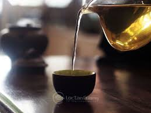
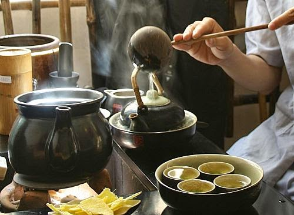
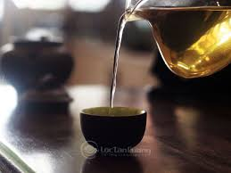
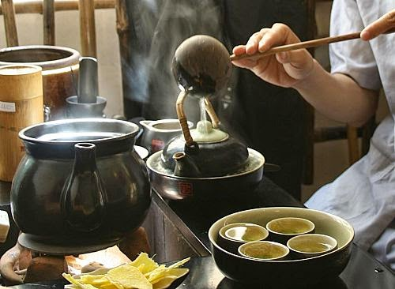

Giới thiệu về trà Shan Tuyết
Đặc Điểm
Điểm đặc trưng dễ nhận thấy nhất của trà Shan Tuyết chính là màu trắng như tuyết của sợi trà. Nếu bạn nhìn kỹ sẽ thấy màu trắng ấy được tạo ra bởi những sợi lông tơ nhỏ li ti bám dầy quanh búp trà. Bản thân búp trà tươi khi còn ở trên cây đã được bao phủ bởi lớp lông trắng bạc này.
Đó là cơ chế tự bảo vệ của búp trà để chống chọi với sự khắc nghiệt của thiên nhiên. Cây trà cổ thụ hàng trăm năm tuổi phải tự mình cắm sâu rễ vào lòng đất để hút chất dinh dưỡng nuôi cây, và phải chống chọi với cái lạnh, với mây mù bao phủ quanh năm. Búp trà đã đẹp thế nhưng để giữ nguyên được những sợi lông tơ trắng tinh này sau quá trình làm trà lại là cả một thách thức mà không phải người nào cũng làm được.
Cách Chế biến
Có thể nói, để làm được những sợi trà Shan Tuyết vừa xoăn tròn đều tăm tắp, vừa giữ được lớp “tuyết” phủ trên cánh trà như của Trà Việt đang bán đòi hỏi người làm trà phải có nhiều kinh nghiệm và rất khéo léo. Phải kinh nghiệm và khéo léo lắm thì việc vò trà mới đều tay. Lực tác động vào sợi trà phải vừa đủ để sợi trà được vê cho xoắn lại mà vẫn giữ được lớp lông tơ vốn rất dễ rụng này.
Mỗi lứa trà hái về, dù ít dù nhiều, người làm trà cũng phải bắt tay vào chế biến ngay bất kể ngày đêm. Nâng niu từng búp trà, luôn tay luôn chân cho đến khi ra được một mẻ trà thành phẩm. Chỉ một chút sơ suất nhỏ cũng có thể làm hỏng cả mẻ trà. Vậy mới thấy để có được một ấm trà ngon, người làm trà đã phải dồn tâm sức nhiều như thế nào.
Chỉ dẫn hương vị
Khi lần đầu được uống Trà Shan Tuyết cổ thụ Hà Giang, được thưởng thức hương thơm nhẹ nhàng thoang thoảng như hoa rừng mới nở, cùng với vị trà ngọt thanh lẫn với cái chát dìu dịu, nước trà vàng sánh như mật ong, chúng tôi thật sự cảm thấy bất ngờ. Bất ngờ vì Việt Nam cũng có một loại trà mang lại hương vị tinh tế như thế.
Công dụng
Trà Shan Tuyết có rất nhiều công dụng khác nhau đối với sức khoẻ con người. Tuy nhiên, công dụng nổi bật nhất của loại trà này là giúp tăng cường hệ thống miễn dịch, thường được gọi là đặc tính chống ung thư.
Trà Shan Tuyết hỗ trợ bạn duy trì một hệ miễn dịch khoẻ mạnh, ngăn ngừa tổn thương tế bào, protein chống vi khuẩn cao hơn ở những bạn hay uống trà. Ngoài ra, loại trà này cũng giúp bạn tăng sự tỉnh táo và tập trung. Vậy nên bạn hãy uống nó vào buổi sáng thay vì buổi tối nhé.
Cách pha
Khuyến nghị: Nhiệt độ pha: khoảng 90°C, lượng trà : 5g/200ml nước , thời gian hãm trà : 20 giây. Đây là 3 yếu tố quan trọng trong việc pha trà, giúp bạn có thể pha được một chén trà ngon.
- Đầu tiên, bạn nên tráng nưới sôi toàn bộ ấm chén. Sau đó cho trà vào ấm trà. Lượng trà bao nhiêu là tùy theo khẩu vị của bạn. Bạn có thể điều chỉnh gia giảm lượng trà trong những lần pha sau để chọn được lượng trà phù hợp nhất.
- Rót nước nóng tầm 90 độ vào ấm trà. Lượng nước tùy theo số chén mà bạn muốn rót
- Hãm trà trong khoảng 20-25 giây, sau đó rót toàn bộ trà trong ấm vào các chén trà. Sau khi đã rót hết trà trong ấm ra, mở nắp ấm để xác trà nguội bớt. Khi nào uống lần tiếp theo thì lại tiếp tục châm thêm nước vào ấm.
- Giờ thì thưởng thức trà thôi
 



Một số lưu ý để pha trà ngon hơn:
- Cho thêm trà nếu bạn muốn uống đậm hơn chứ không ngâm lâu hơn
- Khi pha trà, nếu muốn nước trà trong và đẹp thì nên rót nước vào ấm thật nhẹ tay. Hạn chế để xác trà bị đảo nhiều trong ấm. Khi rót trà cũng nên rót nhẹ tay, nước trà sẽ rất trong và đẹp
- Để dễ dàng quan sát và kiểm soát chất lượng trà, nên pha trà bằng ấm thủy tinh hoặc ấm sứ. Đây là hai chất liệu phản ánh trung thực chất lượng trà mà lại dễ vệ sinh, không bám mùi. Có thể dùng để pha rất nhiều loại trà khác nhau.
Cách bảo quản
Trà là loại sản phẩm rất nhạy cảm với không khí và dễ bị mất mùi , mất vị khi bảo quản không tốt. Nếu chưa dùng đến, bạn có thể bảo quản nó ở ngăn đông tủ lạnh khi nó còn túi hút chân không. Nếu bạn đã mở ra, tốt nhất, hãy dùng nó trong vòng 15 ngày, sau mỗi lần dùng, hãy đậy kín hoặc buộc chặt miệng túi để tránh ánh sáng và không khí tràn vào.
Vùng nguyên liệu
Trước đây, ở Việt Nam chỉ thịnh hành các loại trà xanh truyền thống như Trà Thái Nguyên, Trà Sen, Trà Lài , Trà Ô Long… Còn trà cổ thụ vẫn còn là loại trà rất lạ lẫm. Những người mê trà còn thường hay tìm mua các loại trà nhập từ Trung Quốc về để thưởng thức vì thích cái hương thơm thanh thanh và vị trà nhẹ nhàng. Cái mà các loại trà xanh Việt Nam hồi ấy gần như không có được.

Trong vài năm trở lại đây, trà Shan Tuyết nổi lên như một hiện tượng, và được những người sành trà tìm kiếm bởi chất lượng và sự tinh tế trong hương vị. Trà Shan Tuyết của Trà Việt được thu hái ở vùng trà Hà Giang – nơi có độ cao khoảng 2400m. Với độ cao này, vùng đất Hà Giang luôn có sương phủ quanh năm với những rừng trà cổ thụ rộng lớn. Nơi đây cho ra đời loại trà Shan Tuyết có chất lượng và hương vị vượt trội.
Add Comment
Your email address will not be published. Required fields are marked *